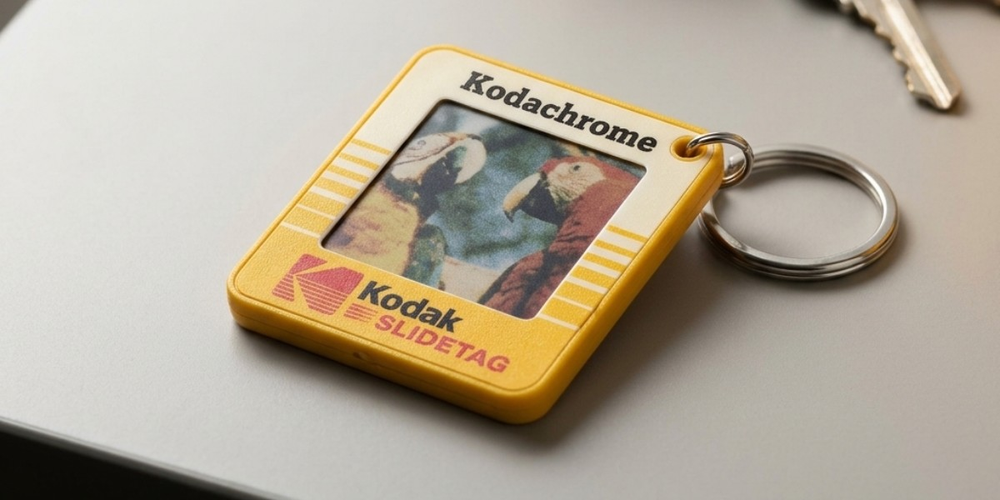

Geekotidien · Édition du 25 novembre 2026
Kodak SlideTag E Ink
Un porte-clés photo E Ink, en vente depuis le 22 novembre

Reto Production lance le Kodak SlideTag, un porte-clés de 16,6 g en forme de diapositive 35 mm. Il est équipé d'un écran E Ink couleur de 1,54 pouce à six teintes, qui affiche jusqu'à 12 photos.
Il assure un suivi Bluetooth via Apple Find My ou Google Find Hub. Selon la page produit du fabricant, il utilise le Bluetooth 5.4, a une portée d'environ 30 m, un buzzer de 75 dB, une certification IP54 et une pile CR2032 fournie.
Il est vendu 34,99 $ par boîte mystère, en vente depuis le 22 novembre. Huit designs rétro sont proposés en boîte standard (279,92 $ pour la série complète), ainsi qu'une neuvième édition « secret » métallique, en boîte individuelle.
Reto Production a conçu le Kodak Charmera, dont la première série s'était épuisée en 24 heures. Le SlideTag reprend le format de boîtes mystère de ce produit.
Le lancement et la mise en vente sont confirmés, mais les caractéristiques viennent de la page produit du fabricant, sans vérification indépendante. L'autonomie d'environ 12 mois provient de fiches de vente au détail : elle reste à vérifier.
Le + : L'autonomie annoncée d'environ 12 mois n'est pas confirmée par le fabricant.